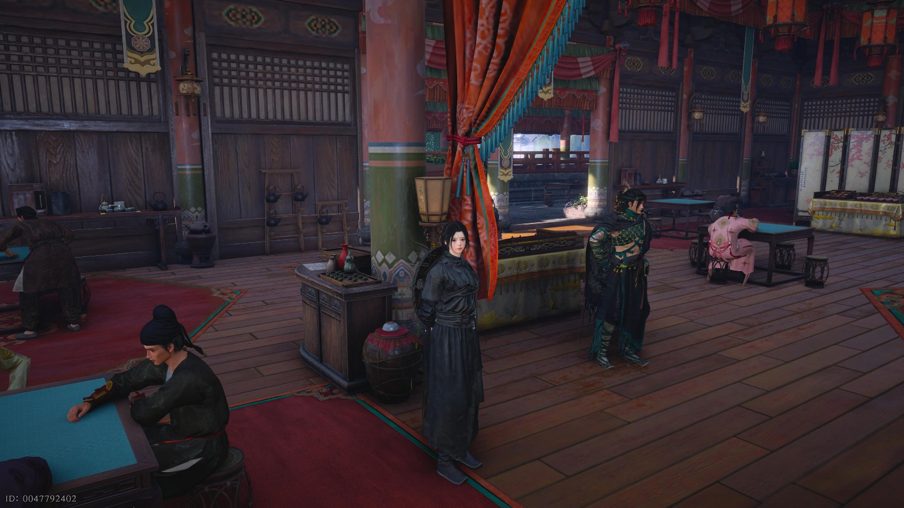
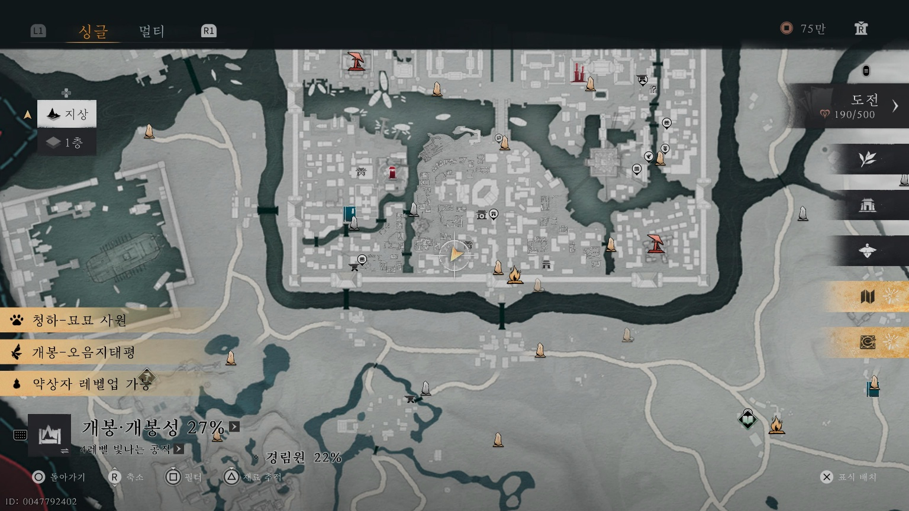
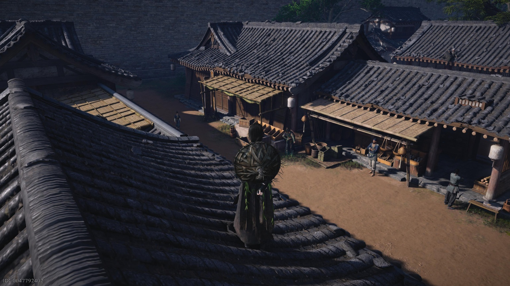

만사록
신룡의 화염
비급 [신룡의 화염] 습득하기
📜 퀘스트 개요
낙구의 잃어버린 절기를 되찾아주고, 보상으로 강력한 비급 [신룡의 화염]을 배우는 퀘스트입니다.
1. 낙구와의 거래
아래 위치로 이동하여 낙구와 대화하세요.
그는 도둑맞은 자신의 절기를 되찾아주면 비급을 전수해주겠다고 제안합니다.


2. 절기 되찾기 (시간/기술 주의)
⚠️ 중요 조건
- 시간: 시진을 반드시 묘시(05:00~07:00)로 변경해야 합니다.
- 기술: 대화가 아닌 허공섭물(염력) 스킬을 사용하여 훔쳐야 합니다.
아래 지도에 표시된 장소로 이동하여 묘시가 되면 구류문 제자가 나타납니다.
그에게 [허공섭물]을 사용하여 절기를 빼앗으세요.
그 후 다시 낙구에게 돌아가 돌려주면 완료됩니다.


🎉 보상 획득
비결 [신룡의 화염] 사용 가능